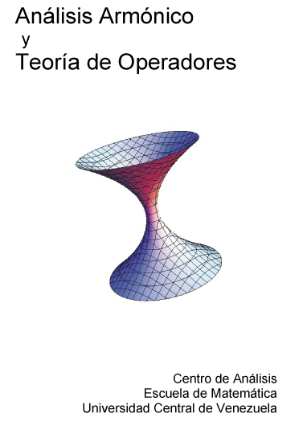

|
Análisis Armónico y Teoría de Operadores |
|
 |
||||||||||||||||
|
Análisis Armónico y Teoría de Operadores es una publicación periódica, electrónica y de libre acceso, editada por el Centro de Análisis de la Universidad Central de Venezuela. Tiene como objetivo la divulgación de los resultados y los temas que son tratados en el Seminario de Análisis del Centro.
Depósito legal N° ppi201102DC3843 |
|